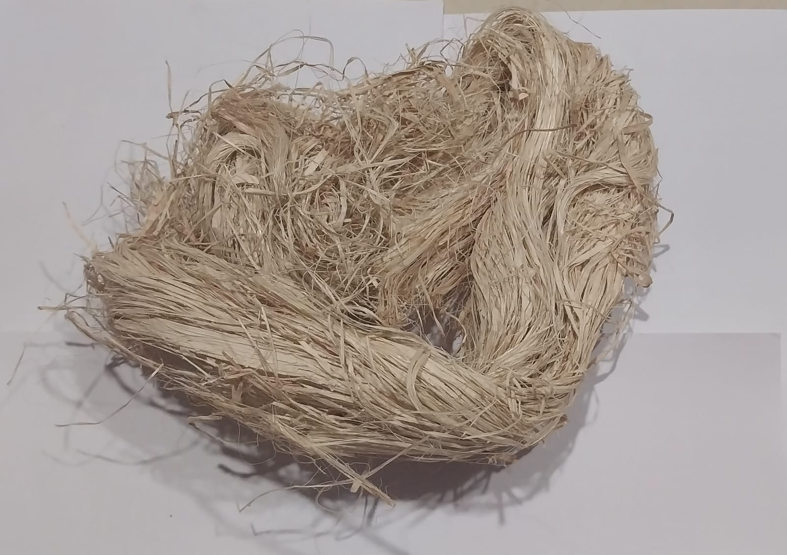
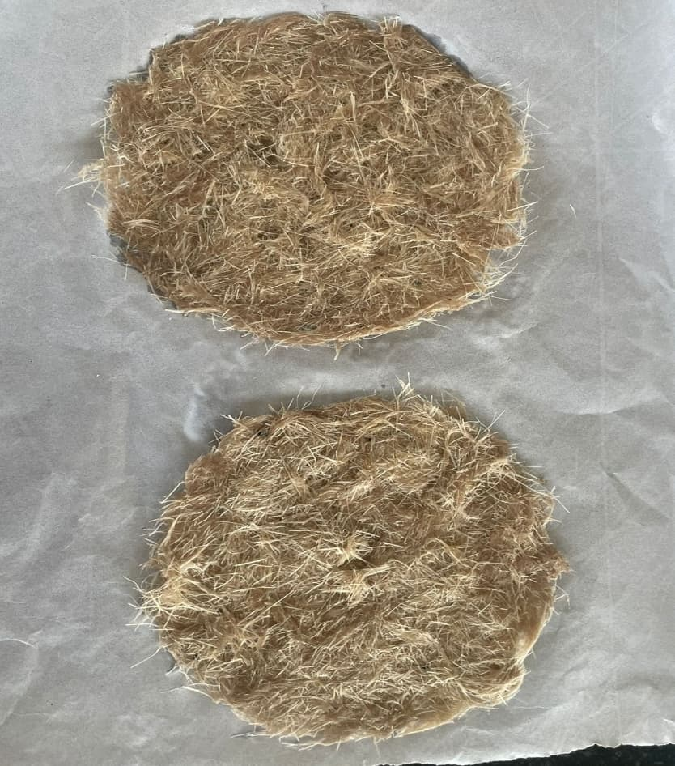

Undiscovered Potential
Why is Banana pseudo stem fibers the best and the most effective ecofriendly way for water filtration?
To answer that, Banana plants are one of the most useful plants in the world. Almost every part of the plant—fruit, peel, leaves, flower, and pseudo stem—can be used in various ways. The banana pseudo stem, which looks like a trunk, plays a crucial role in transporting nutrients from the soil to the fruit. However, after the bananas are harvested, the pseudo stem becomes waste biomass, as banana plants do not regrow after fruiting. Instead of letting this biomass go to waste, scientists and industries are now exploring its potential, especially for fiber extraction. Banana peels are generally considered to be waste usually thrown away, but in fact they have important benefits for clearing water.
The purpose of this following study will focus on the usage of banana pseudo stem fibers in the water filtration process as well as study the various adsorption aspects of it. The pseudo stem, which is typically discarded as agricultural waste after fruit harvesting, presents a valuable source of natural fiber with excellent mechanical, chemical, and hydrophilic properties.
The growing concerns over environmental pollution and the need for biodegradable alternatives to synthetic materials have further fuelled research into the use of banana fiber in filtration and absorption processes. Every ton of banana fruit harvested produces about four tons of biomass waste, including leaves, peels, and pseudo stems. Traditionally, farmers either burn or dump this waste, which can lead to environmental problems like greenhouse gas emissions and water pollution. However, banana pseudo stem fiber is proving to be an eco-friendly, biodegradable, and highly useful material for many applications. With increasing environmental concerns and deforestation, banana pseudo stem fiber is gaining attention as an alternative to wood-based fibers.
As research and technology advance, this once-discarded material is proving to be a valuable resource for sustainable industries and eco-friendly innovations. Banana fiber is gaining recognition as an efficient filtering medium for both air and water. Its microporous nature enables it to retain particulate matter effectively. In water purification, filters made from banana fiber help eliminate suspended solids, heavy metals, and organic pollutants. Research indicates that banana fiber can effectively absorb harmful substances like dyes, lead, and cadmium from wastewater, offering a cost-effective and sustainable alternative to synthetic filtration materials.
Absorption Capabilities and Real-World Applications of Banana Fiber
Banana fiber is a natural powerhouse when it comes to absorption, making it an incredibly versatile material across
multiple industries. With its ability to retain moisture, absorb oils, and regulate humidity, banana fiber is being
used in everything from environmental cleanup to hygiene products and even sustainable agriculture.
Most Widely Applicable Uses of Fibers for Absorption:
1. Oil Spill Cleanup: A Natural Solution for Pollution
One of the most remarkable applications of banana fiber is in oil spill remediation. Since it has a high affinity
for hydrocarbons, banana fiber can effectively soak up oil from contaminated water surfaces, making it a
biodegradable alternative to synthetic oil-absorbing materials. Unlike traditional oil booms and pads made from
plastics, banana fiber naturally breaks down after use, reducing environmental impact.
2. Hygiene and Medical Applications: Soft, Absorbent, and Eco-Friendly
Banana fiber’s moisture retention ability makes it an ideal material for the hygiene industry. It is used in:
• Sanitary pads and diapers – Its absorbent nature keeps moisture locked in while allowing for breathability,
providing a comfortable and eco-conscious alternative to plastic-based hygiene products.
• Medical dressings and wound care – The fiber’s ability to retain moisture while being lightweight and
breathable makes it a great choice for bandages, wound dressings, and gauze. This helps keep wounds clean and
promotes healing without causing skin irritation.
3. Agriculture: Enhancing Soil Health and Crop Growth
Farmers are tapping into the benefits of banana fiber as a natural mulch material. When added to soil, it helps
with:
• Moisture retention – By holding onto water, banana fiber helps prevent soil from drying out, reducing the need
for excessive irrigation.
• Nutrient conservation – It locks in essential nutrients, ensuring plants have continuous access to minerals
for growth.
• Soil erosion prevention – As a bio-mulch, it forms a protective layer over the soil, reducing runoff and soil
degradation, especially in dry or windy conditions.
Additionally, banana fiber is being explored for soil remediation, where it helps absorb and neutralize harmful
substances from contaminated land, making it more fertile and safer for planting.
4. Sustainable Packaging: Protecting Products Naturally
With growing concerns about plastic waste, banana fiber is emerging as a key material in eco-friendly packaging. Its
moisture-resistant properties help protect perishable goods like fruits, vegetables, and baked goods from excess
humidity and microbial contamination. Researchers are developing biodegradable food packaging using banana fiber,
aiming to extend the shelf life of fresh produce while reducing reliance on plastic.
The Future of Absorbent Banana Fiber
With its impressive ability to trap moisture, absorb pollutants, and regulate humidity, banana fiber is rapidly
becoming a go-to material in industries looking for sustainable and effective solutions. Whether it's cleaning up
oil spills, improving soil health, or replacing plastic packaging, this natural and biodegradable fiber is proving
that it’s more than just agricultural waste—it’s a resource with immense potential for a greener future.
When used in air filtration, banana fiber mats and composites capture fine dust, airborne pollutants, and microbes. Additionally, their natural antibacterial properties make them particularly valuable in improving indoor air quality in both industrial and household settings. Unlike synthetic filters, banana fiber-based options decompose naturally, reducing environmental impact while maintaining efficiency.
The process used is filtered coated water using gravel, sand, charcoal, palm fiber and the final filter layer is banana peels that acts as a place to disinfect raw water against germs and bacteria still present in the water. The results obtained indicate that water purification using banana peels meets the criteria for physical testing, including water levels with a pH between 7.0–8.5, and does not interfere with the taste and smell of water. Rainwater and river water can be used as cleaning water because the pH meets all requirements, but cannot be used as clean water because bacteriologically all samples do not meet the drinking water standards.
Properties
Banana pseudo stem fiber is proving to be an incredible natural solution for water filtration. With concerns about pollution and the need for sustainable alternatives, this fiber stands out due to its unique properties that allow it to efficiently clean water while being completely biodegradable. Unlike synthetic filters, banana fiber offers a renewable, cost-effective, and eco-friendly way to remove contaminants.
Let’s dive into the key reasons why banana fiber is such an effective filtration material:
1. Superior Water Absorption and Retention
Banana fiber has a remarkable ability to soak up and hold onto large amounts of water. This makes it highly
effective in capturing sediments, dirt, and other suspended particles, preventing them from passing through the
filter. Thanks to its natural capillary action, water flows smoothly through the fiber while trapping impurities
along the way.
2. Porous Structure with a High Surface Area
One of the biggest strengths of banana fiber is its microporous nature. The tiny pores throughout the fiber create
a large surface area, which helps it absorb pollutants like heavy metals, dyes, and toxins. When converted into
activated carbon, its filtering capabilities become even more powerful, making it an excellent option for removing
finer contaminants.
3. Natural Heavy Metal Adsorption
Heavy metals like lead (Pb), cadmium (Cd), and chromium (Cr) pose serious health risks when present in water.
Fortunately, banana fiber is packed with cellulose, hemicellulose, and lignin, which work together as natural
ion-exchangers to pull these harmful metals out of the water. Scientists have also found that treating banana
fiber with simple chemical processes (like acid or alkali treatments) can boost its ability to trap heavy metals,
making it even more effective.
4. Built-in Antimicrobial and Biodegradable Properties
Unlike plastic-based filters, banana fiber is completely biodegradable, meaning it breaks down naturally without
harming the environment. But what’s even more impressive is that it has antimicrobial properties. Research
suggests that banana fiber can help prevent the growth of harmful bacteria, keeping filtered water cleaner for
longer.
5. Strength, Durability, and Versatility
Even though banana fiber is lightweight, it’s surprisingly strong and durable. It holds up well during filtration
without easily breaking down or losing its structure. Additionally, it can be combined with other natural
materials like chitosan, biochar, or activated carbon to further enhance its performance. This makes it a
versatile material that can be tailored for different filtration needs.
A Natural Solution for a Cleaner Future
With the world moving towards sustainable water purification, banana fiber is proving to be a low cost,
eco-friendly alternative that doesn’t sacrifice performance. Whether used in household water filters, industrial
wastewater treatment, or large-scale purification projects, this natural fiber has the potential to make clean
water accessible while reducing environmental waste.
Key Properties:
1. Renewable and Sustainable – ecofriendly alternative to synthetic membrane
2. Biodegradable – naturally decompose over time
3. Low Cost – regions where banana is abundantly cultivated make an economical choice
4. Mechanical Strength – Banana fibers have good mechanical strength and can withstand the mechanical stresses
associated with filtration processes.
5. Chemical Resistance – Banana fibers have shown resistance to certain chemicals, which can be advantageous in
applications where the membrane may come into contact with corrosive substances.
6. Pore Size Control – The structure of banana fibers can be manipulated to control the pore size of the
membrane.
7. Biocompatibility – Banana fibers are generally biocompatible, making them suitable for certain biotechnology
and biomedical applications, such as blood filtration or protein separation.
Extraction Process
| Component | Percentage (%) | Function in Filtration & Absorption |
|---|---|---|
| Cellulose | 50–65% | Provides a porous structure for water retention and contaminant adsorption |
| Hemicellulose | 15–25% | Enhances water absorption capacity and ion-exchange properties |
| Lignin | 10–15% | Contributes to fiber strength and antimicrobial properties |
| Pectin & Waxes | 3–5% | Improves water retention and helps in the removal of organic contaminants |
| Minerals & Others | 1–5% | Supports biodegradability and enhances structural integrity in filtration setups |
How This Composition Affects Absorption Capabilities?
- Hydrophilicity: The high cellulose and hemicellulose content allows banana fiber to absorb and retain large amounts of water, making it useful for moisture management in hygiene products and soil conditioning in agriculture.
- Ion-Exchange Properties: Banana fibers contain negatively charged hydroxyl (-OH) groups in cellulose and hemicellulose, which can attract and bind heavy metal ions (e.g., lead (Pb), cadmium (Cd), chromium (Cr)) from contaminated water.
- Porous Nature: The high surface area due to its fibrous structure increases adsorption efficiency, allowing it to filter out oil, dyes, bacteria, and suspended solids.
- Biodegradability: Unlike synthetic filtration materials, banana fibers decompose naturally, reducing environmental pollution after use.
Manual and mechanical extraction
STEP 1 - One of the critical challenges in banana fiber processing
Since banana fiber is not a well-established fiber, the advanced fiber extraction machineries are not developed yet.
Various attempts have been performed to develop different types of extractors; however, very few are commercially
available. The primitive and simple method of extraction is manual extraction done by direct extraction which is
carried out using sharp objects like a blade. It is common in villages and rural areas. This technique produces good
quality fiber, without much debris on the fiber surface; however, production is very low. In general, manual
extraction produces superior quality of fiber than machine extraction, since mechanical extraction may cause damage
to the fibers due to beating.
The key elements contributing to the mechanical qualities of manually extracted fibers are high cellulose content
and low microfibrillar angle, which are not disturbed during manual extraction. For the fiber extraction, after
harvesting the crop, the sheaths of the pseudo stems are separated manually. The machine operator holds one end of
the long sheaths of pseudo stem and inserts it inside the machine. The machine consists of a high-speed rotating
drum. Due to high-speed mechanical beating action, the debris associated with the pseudo stem is removed and the
fibers are getting separated. The separated fibers are manually combed using a metallic comb to remove the remnants
of the pseudo stem remains, if any. Finally, the fibers are washed and dried. While inserting the long sheaths
inside the decorticator, a major portion of the pseudo stem is converted into long fiber. Since dried sheaths cannot
be processed by a machine, decortication must be done as soon as the crop is harvested. One pseudo stem sheet can be
processed at a time because the majority of decorticators are made for batch processing.
STEP 2 – Water removal
The water retention requirement is highly dependent on the quality of the fiber provided by the decorticator. After decortications and subsequent combing, if the banana fiber consists of fleshy remnants of the pseudo stem, the fiber may be subjected to water retting to enhance the fiber quality. Although water removal is a slow degradation process by microorganisms, extreme care should be taken up to avoid over retting of banana fiber, which may otherwise result in degradation of cellulose and ultimately reduce the strength and luster of the fiber. The temperature, pH of water, and micro-nutrients have a substantial effect on the quality of banana fiber.
STEP 3 – Enzymatic extraction
The extraction of banana pseudo stem fiber is a complex biochemical process that requires more than just a single enzyme. Since enzymes are highly specific in their action, no single enzyme is capable of completely breaking down the cementing materials—such as lignin, pectin, and hemicellulose—that hold the fiber together. To achieve effective fiber extraction, a combination of enzymes is typically employed.
STEP 4 - Preparation of the filter membrane using 50 grams of fibers
➢ Cut the long fibers into small pieces.

➢ Prepare boiling water, add 2 tablespoons of NaOH, and then add the chopped fibers (let it boil for a maximum of 3
hours).
➢ Remove the excess water and flatten it on a muslin cloth.
 ➢ Air-dry the membrane for 15–30 mins until completely dry. The membrane is ready; it can be molded into various shapes as per the requirement and its application along with other filters like charcoal, alum, sand granules, etc.
Each layer is specifically designated as filtration of different particles and molecules.
Why Enzymes Alone Are Not Enough for Fiber Extraction?
Enzymes are not highly effective when applied directly to raw plant material for fiber extraction. Instead, they are mainly used after the initial fiber separation process to remove residual binding materials. This post-retting enzyme treatment helps to refine and improve the fiber’s properties, making it smoother, cleaner, and more suitable for various applications.
Commonly Used Enzymes in Banana Fiber Processing
- Cellulase – Helps break down cellulose and improves fiber flexibility.
- Pectinase – Targets pectin, which acts as a glue between fiber cells, aiding in fiber separation.
- Hemicellulose – Degrades hemicellulose, further loosening fiber bundles.
- Lignin Peroxidase – Breaks down lignin, enhancing fiber softness and usability.
Applications
Applications of Banana Pseudostem Fibers in Water Filtration and Absorption
Banana pseudostem fibers have gained attention as a sustainable and biodegradable material for water filtration and absorption due to their high porosity, excellent water retention, and natural adsorption properties. Their unique composition—primarily cellulose, hemicellulose, and lignin—allows them to trap impurities effectively, making them useful in various environmental and industrial applications.
Water Filtration Applications
Removal of Heavy Metals
- Banana fibers possess natural ion-exchange properties due to the presence of hydroxyl (-OH) and carboxyl (-COOH) groups that capture toxic metal ions like lead (Pb), cadmium (Cd), chromium (Cr), and arsenic (As).
- Chemical modifications (e.g., acid or alkaline treatments) can enhance adsorption efficiency.
Filtration of Organic Pollutants & Dyes
- With a high surface area and porosity, banana fibers effectively remove organic pollutants—such as pesticides, industrial dyes, and chemical residues—from wastewater.
- Processing into activated carbon further boosts their pollutant-trapping capabilities.
Bacterial Filtration & Antimicrobial Properties
- Studies indicate natural antimicrobial activity in banana fibers, which helps reduce bacterial contamination.
- They can be combined with materials like chitosan or silver nanoparticles for enhanced microbial removal.
Absorption Applications
Oil Spill Cleanup & Industrial Waste Absorption
- The fibers absorb oils and hydrocarbons efficiently, making them suitable for cleaning oil spills in marine environments.
- They can be used as biodegradable absorbent pads for industrial waste oils.
Moisture Absorption in Hygiene & Medical Products
- High water retention makes banana fibers ideal for sanitary pads, diapers, and medical dressings, serving as a natural alternative to synthetic absorbents.
- They improve comfort and biodegradability in disposable hygiene products.
Agricultural Soil Improvement & Mulching
- The fibers help retain soil moisture, serving as an effective mulch.
- They aid in controlling soil erosion and enhancing water retention in drought-prone areas.
Future Potential & Conclusion
Banana pseudostem fibers offer a low-cost, eco-friendly, and biodegradable alternative to synthetic filtration and absorption materials. Their applications in water purification, oil spill cleanup, hygiene products, and agriculture highlight their versatility. With further research and processing optimizations, these fibers could become a widely adopted sustainable solution across industries.
Annushree Nimbalkar
Biotechnology Researcher
D.Y. Patil School of Biotechnology & Bioinformatics
Part of Classroom Assignment